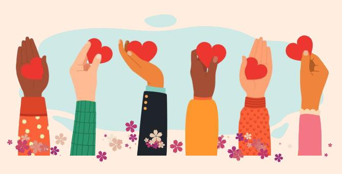

A doação prova que o amor vai além das palavras e se transforma em ação, uma doação é a ação de dar algo a outra pessoa, geralmente uma pessoa necessitada ou uma instituição.
O ato de doar contribui verdadeiramente para melhorar a sociedade, as instituições e, principalmente as pessoas. Ao enxergar as necessidades do próximo e fazer algo para supri-las, nos tornamos mais justos e igualitários. É um ato de desprendimento, renúncia, entrega e amor ao próximo.
Existem várias maneiras de fazer uma doação, mas tem gente que nem sabe por onde doar, o que é possível doar ou como fazer a doação.
Criei esse site com o objetivo de informar sobre esse assunto com todos os detalhes para que você consiga realizar por que isso vai trazer benefícios para os dois lados, pois essas ações quando são feitas podem ser são seguidas por um período maior de melhoria do bem-estar e senso de autovalorização, sentimentos que por sua vez reduzem o estresse e melhoram a saúde daqueles que ajudam, e também contribuindo para a sociedade desse modo transformando o mundo e fazendo dele um lugar melhor.